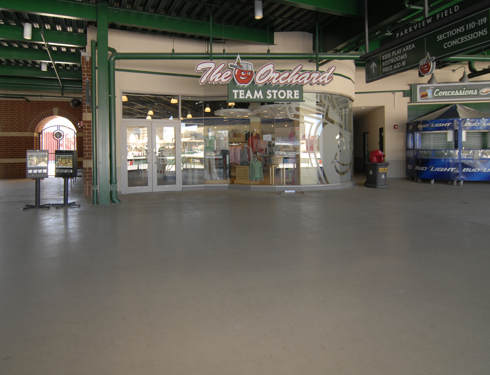
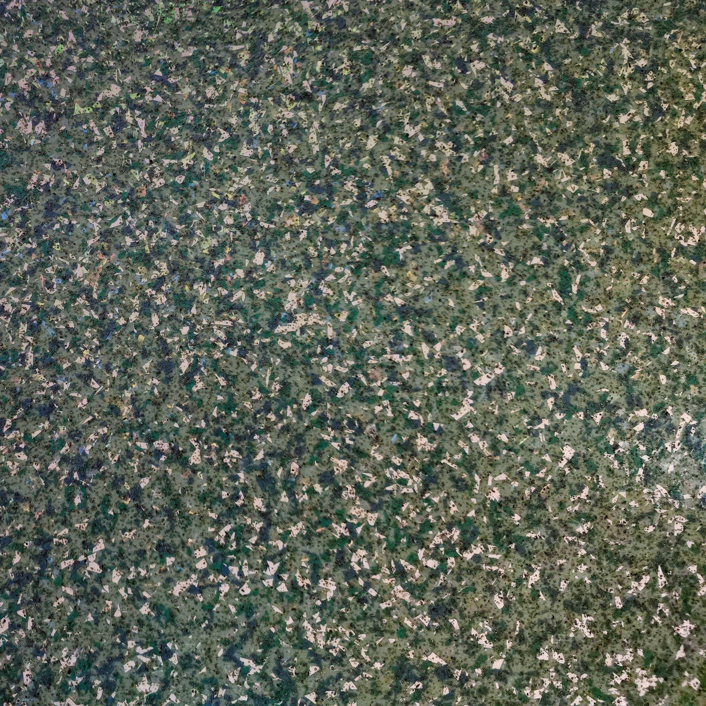

Commercial & Industrial Flooring
Commercial Epoxy Coatings in Rochester, WA
High-compressive-strength seamless floors engineered for forklift traffic and rigorous sanitation.
Heavy-Duty Resinous Systems for Rochester Businesses
Commercial operations in Rochester and the I-5 corridor demand seamless flooring that withstands continuous forklift loads, pallet jacks, chemical spills, and intensive pressure washing. We engineer and install high-build epoxy mortars, urethane cements, and chemical-resistant topcoats tailored to your facility’s exact traffic, sanitation, and safety standards.
Service Areas & Local Coverage
We provide commercial epoxy and urethane coatings throughout Rochester, Grand Mound, Centralia, Chehalis, Tenino, and South Thurston County. Our crews are fully licensed, bonded, and insured with commercial-scale equipment to minimize facility downtime. View local coverage & municipal permit guidelines →

What to look for in Commercial Epoxy Coatings
High Compressive Strength
Engineered to withstand heavy point loads from industrial racking, forklifts, and farm machinery.
Seamless & Hygienic
Eliminates porous grout lines and cracks where moisture, dirt, and bacteria accumulate.
The installation process, step by step
Every floor follows the same sequence. The prep stages are where the outcome is actually decided — the coating itself is the last and least difficult part.
- Moisture vapor testing. The slab is tested for moisture vapor emission before any product is selected. A high reading changes which primer is specified; it does not simply get coated over.
- Mechanical diamond grinding. Planetary grinders with HEPA dust extraction open the concrete to a CSP-2 or CSP-3 profile. No acid etching, which cannot produce a reliable profile on a hard-troweled slab.
- Crack and spall repair. Cracks are routed out and filled with fast-setting polyurea; spalled areas are rebuilt. Repairs are sanded flush so they do not show through the finish.
- Primer coat. A penetrating primer — moisture-tolerant where testing calls for it — keys into the ground profile and establishes the bond for everything above it.
- Base coat and broadcast. 100% solids epoxy is applied and, on flake systems, vinyl chips are broadcast to refusal and the excess scraped back once cured.
- Topcoat. A UV-stable polyaspartic or urethane clear coat provides the wear surface, chemical resistance and the final sheen level.
How long it takes and when you can use the floor
| Stage | Typical timing |
|---|---|
| Grinding, repair and prep | Day 1 |
| Primer and base coat | Day 1–2 |
| Topcoat | Day 2 |
| Light foot traffic | Typically 12–24 hours after topcoat |
| Vehicle traffic | About 72 hours (standard epoxy); less on polyaspartic systems |
Cure times are temperature dependent. In an unheated building during a Pacific Northwest winter, slab temperature — not air temperature — governs the schedule, and these windows extend.
What it costs in the Rochester area
Professional systems in the South Sound generally run $5.50 to $8.50 per square foot for a complete multi-layer build. The spread comes down to slab condition and the system specified, not just floor size.
| Project | Approximate size | Typical range |
|---|---|---|
| Single-car garage | 250–300 sq ft | $1,400–$2,400 |
| Two-car garage | 400–500 sq ft | $2,200–$3,800 |
| Three-car garage or shop | 650–800 sq ft | $3,600–$6,200 |
Costs move upward when the slab needs significant crack or spall repair, when an existing failed coating has to be removed, when moisture readings require a vapor-barrier base coat, or when a metallic or multi-color decorative finish is specified. They are not reduced by skipping grinding or moisture testing — that is where a cheap bid usually finds its savings, and it is also why those floors fail.
Ranges are regional estimates for planning purposes, not a quote. Pricing is confirmed after the slab is inspected and measured.
Epoxy, polyaspartic, and big-box DIY kits compared
| 100% solids epoxy | Polyaspartic | Big-box DIY kit | |
|---|---|---|---|
| Solids content | 100% | Typically 85–100% | About 30–40% |
| Surface prep required | Diamond grinding | Diamond grinding | Acid etch (inadequate) |
| UV stability | Ambers over time | UV stable | Poor |
| Cure speed | Slower; temperature sensitive | Fast; cures at low temperatures | Fast but thin |
| Typical service life | 15–25+ years | 15–25+ years | Often 1–2 years |
Most professional floors use both: an epoxy base coat for build and adhesion, with a polyaspartic topcoat for UV stability and fast return to service. The DIY column is the reason so many garage floors in this region are on their second or third coating — a 30–40% solids film over an acid-etched slab has very little to hold onto, and hot tires lift it first.
Maintenance and what the warranty covers
A properly installed resin floor needs very little: dust mop or blow out grit, damp mop with a pH-neutral cleaner, and wipe up automotive fluids when they happen rather than letting them sit. Avoid citrus or vinegar-based cleaners, which dull the topcoat over time, and use a plastic blade rather than steel if you have to scrape something off.
Warranty coverage should be provided in writing with the estimate and should state plainly what it covers — typically adhesion and topcoat performance — along with what voids it. Ask before signing rather than after.
Common questions
How much downtime does a commercial floor require?
Usually two to three days for a standard installation, and work can generally be phased by bay or zone so part of the space stays operational. Polyaspartic topcoats shorten the return-to-service window considerably when downtime is the binding constraint.
Can the floor be made slip resistant for a wet area?
Yes. Aggregate or vinyl flake is broadcast into the base coat to build texture. The level of texture is specified against the application — a washdown area or a loading zone needs meaningfully more grip than a showroom.
Do you coat food-preparation or washdown areas?
Those spaces typically call for a seamless system with coved wall transitions rather than a square edge, so there is no joint at the floor-wall junction to trap water or contamination. Urethane cement is often specified over standard epoxy where thermal shock from hot washdown is a factor.
Get an Exact Quote for Your Project
Get an upfront, transparent estimate and schedule a free on-site concrete evaluation with our team.
- Moisture Vapor Testing: Evaluated for hydrostatic emissions before primer application.
- Diamond Mechanical Grinding: CSP-2/CSP-3 concrete profiling with HEPA containment.
- Commercial Polyaspartic: 100% UV-stable topcoats with zero hot-tire pickup.
Prefer to speak with an estimator? Call (360) 284-1350.
Request a Flooring Quote
Fast pricing with zero pressure.
Request a Commercial Epoxy Coatings estimate
Request a commercial flooring quote.
Free, no-obligation estimate.